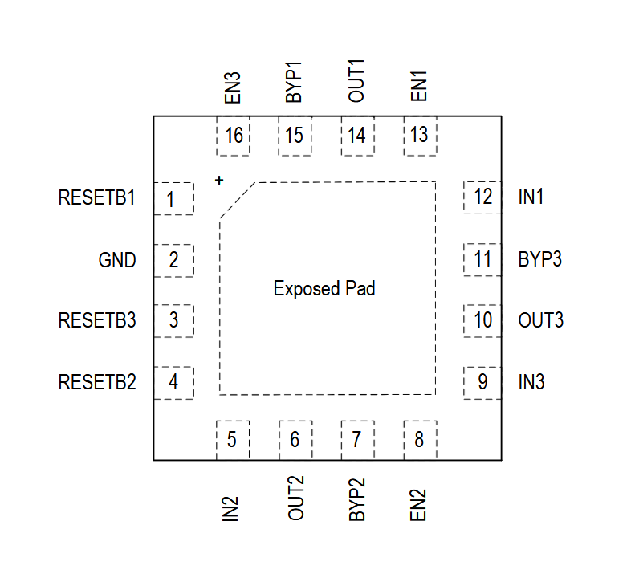
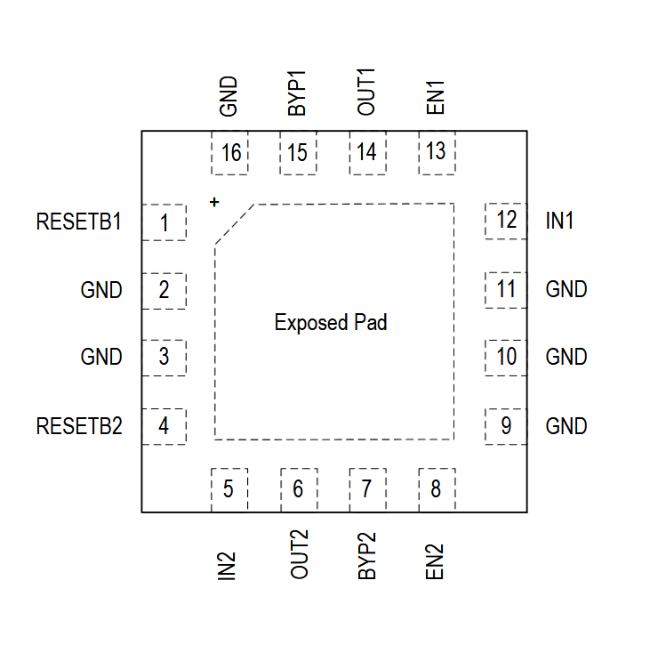

MAX25308

Pin Description
| PIN | NAME | FUNCTION |
|---|---|---|
| 1 | RESET1 | Active-Low RESET for Output 1. RESET1 becomes high impedance when OUT1 is in regulation. Actively pulled down if OUT1 is outside the regulation window. To obtain a logic signal, connect a pullup resistor from this pin to a supply. |
| 2 | GND | Regulator Ground. Bring IN_ and OUT_ bypass capacitor GND connections to this pin. |
| 3 | RESET3 | Active-Low RESET for Output 3. RESET3 becomes high impedance when OUT3 is in regulation. Actively pulled down if OUT3 is outside the regulation window. To obtain a logic signal, connect a pullup resistor from this pin to a supply. |
| 4 | RESET2 | Active-Low RESET for Output 2. RESET2 becomes high impedance when OUT2 is in regulation. Actively pulled down if OUT2 is outside the regulation window. To obtain a logic signal, connect a pullup resistor from this pin to a supply. |
| 5 | IN2 | Regulator Supply Input. Connect to a voltage between 1.7V and 5.5V, and bypass with a 1μF capacitor from IN2 to GND. |
| 6 | OUT2 | Channel 2 Output. Sources maximum up to 300mA at output regulation voltage. Bypass with 2.2μF low ESR capacitor from OUT2 to GND. |
| 7 | BYP2 | Bypass Capacitor Input 2. Connect 1nF to 100nF capacitor between OUT2 and BYP2 to reduce output noise and set the regulator soft-start rate. |
| 8 | EN2 | Enable Input for Channel 2. Connect this pin to a logic signal to enable (VEN2 high) or disable (VEN2 low) the regulator output. Connect to IN_ with 10kΩ pullup resistor to keep the output enabled whenever a valid supply voltage is present. |
| 9 | IN3 | Regulator Supply Input. Connect to a voltage between 1.7V and 5.5V and bypass with a 1μF capacitor from IN3 to GND. |
| 10 | OUT3 | Channel 3 Output. Sources maximum up to 300mA at output regulation voltage. Bypass with 2.2μF low ESR capacitor from OUT3 to GND. |
| 11 | BYP3 | Bypass Capacitor Input 3. Connect 1nF to 100nF capacitor between OUT3 and BYP3 to reduce output noise and set the regulator soft-start rate. |
| 12 | IN1 | Regulator Supply Input. Connect to a voltage between 1.7V and 5.5V, and bypass with a 4.7μF capacitor from IN1 to GND. |
| 13 | EN1 | Enable Input for Channel 1. Connect this pin to a logic signal to enable (VEN1 high) or disable (VEN1 low) the regulator output. Connect to IN_ with a 10kΩ pullup resistor to keep the output enabled whenever a valid supply voltage is present |
| 14 | OUT1 | Channel 1 Output. Sources up to 600mA at output regulation voltage. Bypass with 4.7μF low ESR capacitor from OUT1 to GND. |
| 15 | BYP1 | Bypass Capacitor Input 1. Connect 1nF to 100nF capacitor between OUT1 and BYP1 to reduce output noise and set the regulator soft-start rate. |
| 16 | EN3 | Enable Input for Channel 3. Connect this pin to a logic signal to enable (VEN3 high) or disable (VEN3 low) the regulator output. Connect to IN_ with a10kΩ pull up resistor to keep the output enabled whenever a valid supply voltage is present. |
| EP | EP | Exposed Pad. Connect the exposed pad to a ground plane with low thermal resistance to ambient to provide best heat sinking. |
MAX25307

Pin Description
| PIN | NAME | FUNCTION |
|---|---|---|
| 1 | RESET1 | Active-Low RESET for Output 1. RESET1 becomes high impedance when OUT1 is in regulation. Actively pulled down if OUT1 is outside the regulation window. To obtain a logic signal, connect a pullup resistor from this pin to a supply. |
| 2 | GND | Regulator Ground. Bring IN_ and OUT_ bypass capacitor GND connections to this pin. |
| 3 | GND | Connect to Ground |
| 4 | RESET2 | Active-Low RESET for Output 2. RESET2 becomes high impedance when OUT2 is in regulation. Actively pulled down if OUT2 is outside the regulation window. To obtain a logic signal, connect a pullup resistor from this pin to a supply. |
| 5 | IN2 | Regulator Supply Input. Connect to a voltage between 1.7V and 5.5V, and bypass with a 1μF capacitor from IN2 to GND. |
| 6 | OUT2 | Channel 2 Output. Sources maximum up to 300mA at output regulation voltage. Bypass with 2.2μF low ESR capacitor from OUT2 to GND. |
| 7 | BYP2 | Bypass Capacitor Input 2. Connect 1nF to 100nF capacitor between OUT2 and BYP2 to reduce output noise and set the regulator soft-start rate. |
| 8 | EN2 | Enable Input for Channel 2. Connect this pin to a logic signal to enable (VEN2 high) or disable (VEN2 low) the regulator output. Connect to IN_ with 10kΩ pullup resistor to keep the output enabled whenever a valid supply voltage is present. |
| 9 | GND | Connect to Ground |
| 10 | GND | Connect to Ground |
| 11 | GND | Connect to Ground |
| 12 | IN1 | Regulator Supply Input. Connect to a voltage between 1.7V and 5.5V, and bypass with a 4.7μF capacitor from IN1 to GND. |
| 13 | EN1 | Enable Input for Channel 1. Connect this pin to a logic signal to enable (VEN1 high) or disable (VEN1 low) the regulator output. Connect to IN_ with a 10kΩ pullup resistor to keep the output enabled whenever a valid supply voltage is present |
| 14 | OUT1 | Channel 1 Output. Sources up to 600mA at output regulation voltage. Bypass with 4.7μF low ESR capacitor from OUT1 to GND. |
| 15 | BYP1 | Bypass Capacitor Input 1. Connect 1nF to 100nF capacitor between OUT1 and BYP1 to reduce output noise and set the regulator soft-start rate. |
| 16 | GND | Connect to Ground |
| EP | EP | Exposed Pad. Connect the exposed pad to a ground plane with low thermal resistance to ambient to provide best heat sinking. |